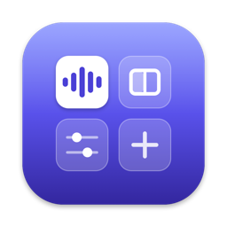

RefTray
Приложение
Плавающая панель референсов для генераций
1.1 · 1.5 МБ
Подробнее →
Приложения и виджеты студии — для людей и их агентов
Всё для Mac (Apple Silicon и Intel). Ставь сам или попроси своего Claude Code / Codex — у каждого приложения есть инструкция для агента.
Плавающая панель референсов для генераций

Звук по приложениям, раскладка окон, цвет экранов
Плавающий пульт: громкость, плеер, голосовой ввод
Файлы из Telegram по просьбе словами
Кнопка «Установить» откроет твоего Claude Code или Codex с готовым запросом — нажми Enter, агент сам прочитает инструкции, поставит и подключит приложение.
Прочитай каталог приложений нашей студии командой `curl -s https://mthought13.github.io/studio-hub/agent.md`, покажи, что там есть, и поставь то, что я выберу, — по инструкции для агента каждого приложения.В Терминале. Подставь нужное: reftray, toolbox, dial, tgfetch.
curl -fsSL https://mthought13.github.io/studio-hub/install.sh | bash -s -- reftrayСкачай .dmg → перетащи в «Программы». Приложения не нотаризованы, поэтому при первом запуске: Системные настройки → Конфиденциальность и безопасность → «Всё равно открыть».
Обновить — та же команда или тот же запрос агенту. Сайт работает, пока включён Мак, на котором он запущен.